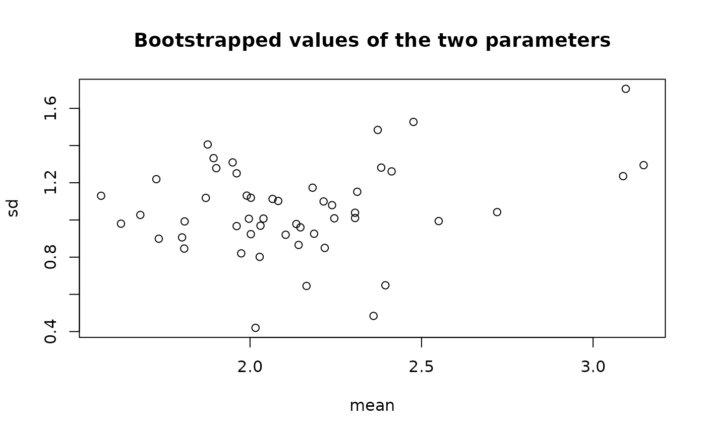

Bootstrap simulation of uncertainty for censored data
bootdistcens.RdUses nonparametric bootstrap resampling in order to simulate uncertainty in the parameters of the distribution fitted to censored data.
Usage
bootdistcens(f, niter = 1001, silent = TRUE,
parallel = c("no", "snow", "multicore"), ncpus)
# S3 method for class 'bootdistcens'
print(x, ...)
# S3 method for class 'bootdistcens'
plot(x, ...)
# S3 method for class 'bootdistcens'
summary(object, ...)
# S3 method for class 'bootdistcens'
density(..., bw = nrd0, adjust = 1, kernel = "gaussian")
# S3 method for class 'density.bootdistcens'
plot(x, mar=c(4,4,2,1), lty=NULL, col=NULL, lwd=NULL, ...)
# S3 method for class 'density.bootdistcens'
print(x, ...)Arguments
- f
An object of class
"fitdistcens", output of thefitdistcensfunction.- niter
The number of samples drawn by bootstrap.
- silent
A logical to remove or show warnings and errors when bootstraping.
- parallel
The type of parallel operation to be used,
"snow"or"multicore"(the second one not being available on Windows), or"no"if no parallel operation.- ncpus
Number of processes to be used in parallel operation : typically one would fix it to the number of available CPUs.
- x
An object of class
"bootdistcens".- object
An object of class
"bootdistcens".- ...
Further arguments to be passed to generic methods or
"bootdistcens"objects fordensity.- bw, adjust, kernel
resp. the smoothing bandwidth, the scaling factor, the kernel used, see
density.- mar
A numerical vector of the form
c(bottom, left, top, right), seepar.- lty, col, lwd
resp. the line type, the color, the line width, see
par.
Details
Samples are drawn by
nonparametric bootstrap (resampling with replacement from the data set). On each bootstrap sample the function
mledist is used to estimate bootstrapped values of parameters. When mledist fails
to converge, NA values are returned. Medians and 2.5 and 97.5 percentiles are computed by removing
NA values. The medians and the 95 percent confidence intervals of parameters (2.5 and 97.5 percentiles)
are printed in the summary.
If inferior to the whole number of iterations, the number of iterations for which mledist converges
is also printed in the summary.
The plot of an object of class "bootdistcens" consists in a scatterplot or a matrix of scatterplots
of the bootstrapped values of parameters.
It uses the function stripchart when the fitted distribution
is characterized by only one parameter, and the function plot in other cases.
In these last cases, it provides
a representation of the joint uncertainty distribution of the fitted parameters.
It is possible to accelerate the bootstrap using parallelization. We recommend you to
use parallel = "multicore", or parallel = "snow" if you work on Windows,
and to fix ncpus to the number of available processors.
density computes the empirical density of bootdistcens objects using the
density function (with Gaussian kernel by default).
It returns an object of class density.bootdistcens for which print
and plot methods are provided.
Value
bootdistcens returns an object of class "bootdistcens", a list with 6 components,
- estim
a data frame containing the bootstrapped values of parameters.
- converg
a vector containing the codes for convergence of the iterative method used to estimate parameters on each bootstraped data set.
- method
A character string coding for the type of resampling : in this case
"nonparam"as it is the only available method for censored data.- nbboot
The number of samples drawn by bootstrap.
- CI
bootstrap medians and 95 percent confidence percentile intervals of parameters.
- fitpart
The object of class
"fitdistcens"on which the bootstrap procedure was applied.
Generic functions:
printThe print of a
"bootdistcens"object shows the bootstrap parameter estimates. If inferior to the whole number of bootstrap iterations, the number of iterations for which the estimation converges is also printed.summaryThe summary provides the median and 2.5 and 97.5 percentiles of each parameter. If inferior to the whole number of bootstrap iterations, the number of iterations for which the estimation converges is also printed in the summary.
plotThe plot shows the bootstrap estimates with the
stripchartfunction for univariate parameters andplotfunction for multivariate parameters.densityThe density computes empirical densities and return an object of class
density.bootdistcens.
See also
See fitdistrplus for an overview of the package.
fitdistcens, mledist, quantile.bootdistcens
for another generic function to calculate
quantiles from the fitted distribution and its bootstrap results
and CIcdfplot for adding confidence intervals on quantiles
to a CDF plot of the fitted distribution.
Please visit the Frequently Asked Questions.
References
Cullen AC and Frey HC (1999), Probabilistic techniques in exposure assessment. Plenum Press, USA, pp. 181-241.
Delignette-Muller ML and Dutang C (2015), fitdistrplus: An R Package for Fitting Distributions. Journal of Statistical Software, 64(4), 1-34, doi:10.18637/jss.v064.i04 .
Examples
# We choose a low number of bootstrap replicates in order to satisfy CRAN running times
# constraint.
# For practical applications, we recommend to use at least niter=501 or niter=1001.
# (1) Fit of a normal distribution to fluazinam data in log10
# followed by nonparametric bootstrap and calculation of quantiles
# with 95 percent confidence intervals
#
data(fluazinam)
(d1 <-log10(fluazinam))
#> left right
#> 1 0.5797836 0.5797836
#> 2 1.5263393 1.5263393
#> 3 1.9395193 1.9395193
#> 4 3.2304489 NA
#> 5 2.8061800 2.8061800
#> 6 3.0625820 NA
#> 7 2.0530784 2.0530784
#> 8 2.1105897 2.1105897
#> 9 2.7678976 2.7678976
#> 10 3.2685780 NA
#> 11 0.2041200 0.2041200
#> 12 0.6812412 0.6812412
#> 13 1.9138139 1.9138139
#> 14 2.1903317 2.1903317
f1 <- fitdistcens(d1, "norm")
b1 <- bootdistcens(f1, niter = 51)
b1
#> Parameter values obtained with nonparametric bootstrap
#> mean sd
#> 1 1.801941 0.9061848
#> 2 2.186771 0.9257518
#> 3 1.990527 1.1308470
#> 4 2.028140 0.8015279
#> 5 2.135006 0.9781792
#> 6 1.949393 1.3093106
#> 7 2.394637 0.6488951
#> 8 2.039216 1.0074788
#> 9 2.082236 1.1022176
#> 10 3.147403 1.2947017
#> 11 2.146919 0.9602161
#> 12 3.087594 1.2355780
#> 13 1.974322 0.8203641
#> 14 1.808154 0.8462336
#> 15 2.002385 0.9236609
#> 16 1.961051 1.2507536
#> 17 3.095331 1.7049462
#> 18 1.871165 1.1185183
#> 19 2.382466 1.2813619
#> 20 2.002555 1.1193241
#> 21 1.961001 0.9670951
#> 22 2.030508 0.9690768
#> 23 1.996697 1.0064442
#> 24 2.306199 1.0103954
#> 25 2.312518 1.1514471
#> 26 1.623908 0.9799432
#> 27 2.372317 1.4839378
#> 28 2.720439 1.0422603
#> 29 1.726935 1.2193378
#> 30 2.103877 0.9204561
#> 31 1.901651 1.2784404
#> 32 2.360030 0.4841162
#> 33 2.217810 0.8496285
#> 34 1.893790 1.3322725
#> 35 2.476399 1.5270218
#> 36 1.809391 0.9921912
#> 37 1.876677 1.4056678
#> 38 2.245689 1.0088385
#> 39 1.680219 1.0270583
#> 40 2.141612 0.8657101
#> 41 2.239195 1.0795931
#> 42 2.016047 0.4200440
#> 43 2.412862 1.2610093
#> 44 2.164688 0.6451802
#> 45 2.550005 0.9939839
#> 46 2.065715 1.1129965
#> 47 1.565869 1.1299368
#> 48 2.182382 1.1733989
#> 49 2.306101 1.0387789
#> 50 2.214443 1.0994468
#> 51 1.734065 0.8991223
summary(b1)
#> Nonparametric bootstrap medians and 95% percentile CI
#> Median 2.5% 97.5%
#> mean 2.082236 1.6379860 3.093397
#> sd 1.027058 0.5243822 1.516251
plot(b1)

quantile(b1)
#> (original) estimated quantiles for each specified probability (censored data)
#> p=0.1 p=0.2 p=0.3 p=0.4 p=0.5 p=0.6 p=0.7
#> estimate 0.6655064 1.179033 1.549321 1.86572 2.161449 2.457179 2.773577
#> p=0.8 p=0.9
#> estimate 3.143865 3.657392
#> Median of bootstrap estimates
#> p=0.1 p=0.2 p=0.3 p=0.4 p=0.5 p=0.6 p=0.7 p=0.8
#> estimate 0.7885857 1.225013 1.594139 1.870682 2.082236 2.337072 2.6139 2.955057
#> p=0.9
#> estimate 3.388593
#>
#> two-sided 95 % CI of each quantile
#> p=0.1 p=0.2 p=0.3 p=0.4 p=0.5 p=0.6 p=0.7
#> 2.5 % 0.1294206 0.6954064 1.093142 1.386237 1.637986 1.889236 2.170198
#> 97.5 % 1.5483174 2.0239258 2.380056 2.746770 3.093397 3.456715 3.803642
#> p=0.8 p=0.9
#> 2.5 % 2.459183 2.881401
#> 97.5 % 4.209659 4.772735
CIcdfplot(b1, CI.output = "quantile")
 plot(density(b1))
#> List of 1
#> $ :List of 6
#> ..$ estim :'data.frame': 51 obs. of 2 variables:
#> .. ..$ mean: num [1:51] 1.8 2.19 1.99 2.03 2.14 ...
#> .. ..$ sd : num [1:51] 0.906 0.926 1.131 0.802 0.978 ...
#> ..$ converg: num [1:51] 0 0 0 0 0 0 0 0 0 0 ...
#> ..$ method : chr "nonparam"
#> ..$ nbboot : num 51
#> ..$ CI : num [1:2, 1:3] 2.082 1.027 1.638 0.524 3.093 ...
#> .. ..- attr(*, "dimnames")=List of 2
#> .. .. ..$ : chr [1:2] "mean" "sd"
#> .. .. ..$ : chr [1:3] "Median" "2.5%" "97.5%"
#> ..$ fitpart:List of 17
#> .. ..$ estimate : Named num [1:2] 2.16 1.17
#> .. .. ..- attr(*, "names")= chr [1:2] "mean" "sd"
#> .. ..$ method : chr "mle"
#> .. ..$ sd : Named num [1:2] 0.322 0.263
#> .. .. ..- attr(*, "names")= chr [1:2] "mean" "sd"
#> .. ..$ cor : num [1:2, 1:2] 1 0.135 0.135 1
#> .. .. ..- attr(*, "dimnames")=List of 2
#> .. .. .. ..$ : chr [1:2] "mean" "sd"
#> .. .. .. ..$ : chr [1:2] "mean" "sd"
#> .. ..$ vcov : num [1:2, 1:2] 0.1039 0.0114 0.0114 0.0692
#> .. .. ..- attr(*, "dimnames")=List of 2
#> .. .. .. ..$ : chr [1:2] "mean" "sd"
#> .. .. .. ..$ : chr [1:2] "mean" "sd"
#> .. ..$ loglik : num -20.4
#> .. ..$ aic : num 44.8
#> .. ..$ bic : num 46.1
#> .. ..$ n : int 14
#> .. ..$ censdata :'data.frame': 14 obs. of 2 variables:
#> .. .. ..$ left : num [1:14] 0.58 1.53 1.94 3.23 2.81 ...
#> .. .. ..$ right: num [1:14] 0.58 1.53 1.94 NA 2.81 ...
#> .. ..$ distname : chr "norm"
#> .. ..$ fix.arg : NULL
#> .. ..$ fix.arg.fun: NULL
#> .. ..$ dots : NULL
#> .. ..$ convergence: int 0
#> .. ..$ discrete : logi FALSE
#> .. ..$ weights : NULL
#> .. ..- attr(*, "class")= chr "fitdistcens"
#> ..- attr(*, "class")= chr "bootdistcens"
#> NULL
plot(density(b1))
#> List of 1
#> $ :List of 6
#> ..$ estim :'data.frame': 51 obs. of 2 variables:
#> .. ..$ mean: num [1:51] 1.8 2.19 1.99 2.03 2.14 ...
#> .. ..$ sd : num [1:51] 0.906 0.926 1.131 0.802 0.978 ...
#> ..$ converg: num [1:51] 0 0 0 0 0 0 0 0 0 0 ...
#> ..$ method : chr "nonparam"
#> ..$ nbboot : num 51
#> ..$ CI : num [1:2, 1:3] 2.082 1.027 1.638 0.524 3.093 ...
#> .. ..- attr(*, "dimnames")=List of 2
#> .. .. ..$ : chr [1:2] "mean" "sd"
#> .. .. ..$ : chr [1:3] "Median" "2.5%" "97.5%"
#> ..$ fitpart:List of 17
#> .. ..$ estimate : Named num [1:2] 2.16 1.17
#> .. .. ..- attr(*, "names")= chr [1:2] "mean" "sd"
#> .. ..$ method : chr "mle"
#> .. ..$ sd : Named num [1:2] 0.322 0.263
#> .. .. ..- attr(*, "names")= chr [1:2] "mean" "sd"
#> .. ..$ cor : num [1:2, 1:2] 1 0.135 0.135 1
#> .. .. ..- attr(*, "dimnames")=List of 2
#> .. .. .. ..$ : chr [1:2] "mean" "sd"
#> .. .. .. ..$ : chr [1:2] "mean" "sd"
#> .. ..$ vcov : num [1:2, 1:2] 0.1039 0.0114 0.0114 0.0692
#> .. .. ..- attr(*, "dimnames")=List of 2
#> .. .. .. ..$ : chr [1:2] "mean" "sd"
#> .. .. .. ..$ : chr [1:2] "mean" "sd"
#> .. ..$ loglik : num -20.4
#> .. ..$ aic : num 44.8
#> .. ..$ bic : num 46.1
#> .. ..$ n : int 14
#> .. ..$ censdata :'data.frame': 14 obs. of 2 variables:
#> .. .. ..$ left : num [1:14] 0.58 1.53 1.94 3.23 2.81 ...
#> .. .. ..$ right: num [1:14] 0.58 1.53 1.94 NA 2.81 ...
#> .. ..$ distname : chr "norm"
#> .. ..$ fix.arg : NULL
#> .. ..$ fix.arg.fun: NULL
#> .. ..$ dots : NULL
#> .. ..$ convergence: int 0
#> .. ..$ discrete : logi FALSE
#> .. ..$ weights : NULL
#> .. ..- attr(*, "class")= chr "fitdistcens"
#> ..- attr(*, "class")= chr "bootdistcens"
#> NULL
 # (2) Estimation of the mean of the normal distribution
# by maximum likelihood with the standard deviation fixed at 1
# using the argument fix.arg
# followed by nonparametric bootstrap
# and calculation of quantiles with 95 percent confidence intervals
#
f1b <- fitdistcens(d1, "norm", start = list(mean = 1),fix.arg = list(sd = 1))
b1b <- bootdistcens(f1b, niter = 51)
summary(b1b)
#> Nonparametric bootstrap medians and 95% percentile CI
#> Median 2.5% 97.5%
#> 2.229701 1.617455 2.573413
plot(b1b)
quantile(b1b)
#> (original) estimated quantiles for each specified probability (censored data)
#> p=0.1 p=0.2 p=0.3 p=0.4 p=0.5 p=0.6 p=0.7
#> estimate 0.8527461 1.292676 1.609897 1.880951 2.134298 2.387645 2.658698
#> p=0.8 p=0.9
#> estimate 2.975919 3.415849
#> Median of bootstrap estimates
#> p=0.1 p=0.2 p=0.3 p=0.4 p=0.5 p=0.6 p=0.7 p=0.8
#> estimate 0.9481491 1.388079 1.7053 1.976354 2.229701 2.483048 2.754101 3.071322
#> p=0.9
#> estimate 3.511252
#>
#> two-sided 95 % CI of each quantile
#> p=0.1 p=0.2 p=0.3 p=0.4 p=0.5 p=0.6 p=0.7
#> 2.5 % 0.3359033 0.7758336 1.093054 1.364108 1.617455 1.870802 2.141855
#> 97.5 % 1.2918614 1.7317917 2.049012 2.320066 2.573413 2.826760 3.097813
#> p=0.8 p=0.9
#> 2.5 % 2.459076 2.899006
#> 97.5 % 3.415034 3.854965
# (3) comparison of sequential and parallel versions of bootstrap
# to be tried with a greater number of iterations (1001 or more)
#
# \donttest{
niter <- 1001
data(fluazinam)
d1 <-log10(fluazinam)
f1 <- fitdistcens(d1, "norm")
# sequential version
ptm <- proc.time()
summary(bootdistcens(f1, niter = niter))
#> Nonparametric bootstrap medians and 95% percentile CI
#> Median 2.5% 97.5%
#> mean 2.151430 1.5527865 2.896065
#> sd 1.122534 0.6970428 1.706327
proc.time() - ptm
#> user system elapsed
#> 4.608 0.000 4.609
# parallel version using snow
require("parallel")
ptm <- proc.time()
summary(bootdistcens(f1, niter = niter, parallel = "snow", ncpus = 2))
#> Nonparametric bootstrap medians and 95% percentile CI
#> Median 2.5% 97.5%
#> mean 2.155453 1.5815034 2.897641
#> sd 1.101218 0.7080444 1.650136
proc.time() - ptm
#> user system elapsed
#> 0.008 0.001 3.392
# parallel version using multicore (not available on Windows)
ptm <- proc.time()
summary(bootdistcens(f1, niter = niter, parallel = "multicore", ncpus = 2))
#> Nonparametric bootstrap medians and 95% percentile CI
#> Median 2.5% 97.5%
#> mean 2.175958 1.5529833 2.900566
#> sd 1.120429 0.7211661 1.677379
proc.time() - ptm
#> user system elapsed
#> 4.699 0.337 2.541
# }
# (2) Estimation of the mean of the normal distribution
# by maximum likelihood with the standard deviation fixed at 1
# using the argument fix.arg
# followed by nonparametric bootstrap
# and calculation of quantiles with 95 percent confidence intervals
#
f1b <- fitdistcens(d1, "norm", start = list(mean = 1),fix.arg = list(sd = 1))
b1b <- bootdistcens(f1b, niter = 51)
summary(b1b)
#> Nonparametric bootstrap medians and 95% percentile CI
#> Median 2.5% 97.5%
#> 2.229701 1.617455 2.573413
plot(b1b)
quantile(b1b)
#> (original) estimated quantiles for each specified probability (censored data)
#> p=0.1 p=0.2 p=0.3 p=0.4 p=0.5 p=0.6 p=0.7
#> estimate 0.8527461 1.292676 1.609897 1.880951 2.134298 2.387645 2.658698
#> p=0.8 p=0.9
#> estimate 2.975919 3.415849
#> Median of bootstrap estimates
#> p=0.1 p=0.2 p=0.3 p=0.4 p=0.5 p=0.6 p=0.7 p=0.8
#> estimate 0.9481491 1.388079 1.7053 1.976354 2.229701 2.483048 2.754101 3.071322
#> p=0.9
#> estimate 3.511252
#>
#> two-sided 95 % CI of each quantile
#> p=0.1 p=0.2 p=0.3 p=0.4 p=0.5 p=0.6 p=0.7
#> 2.5 % 0.3359033 0.7758336 1.093054 1.364108 1.617455 1.870802 2.141855
#> 97.5 % 1.2918614 1.7317917 2.049012 2.320066 2.573413 2.826760 3.097813
#> p=0.8 p=0.9
#> 2.5 % 2.459076 2.899006
#> 97.5 % 3.415034 3.854965
# (3) comparison of sequential and parallel versions of bootstrap
# to be tried with a greater number of iterations (1001 or more)
#
# \donttest{
niter <- 1001
data(fluazinam)
d1 <-log10(fluazinam)
f1 <- fitdistcens(d1, "norm")
# sequential version
ptm <- proc.time()
summary(bootdistcens(f1, niter = niter))
#> Nonparametric bootstrap medians and 95% percentile CI
#> Median 2.5% 97.5%
#> mean 2.151430 1.5527865 2.896065
#> sd 1.122534 0.6970428 1.706327
proc.time() - ptm
#> user system elapsed
#> 4.608 0.000 4.609
# parallel version using snow
require("parallel")
ptm <- proc.time()
summary(bootdistcens(f1, niter = niter, parallel = "snow", ncpus = 2))
#> Nonparametric bootstrap medians and 95% percentile CI
#> Median 2.5% 97.5%
#> mean 2.155453 1.5815034 2.897641
#> sd 1.101218 0.7080444 1.650136
proc.time() - ptm
#> user system elapsed
#> 0.008 0.001 3.392
# parallel version using multicore (not available on Windows)
ptm <- proc.time()
summary(bootdistcens(f1, niter = niter, parallel = "multicore", ncpus = 2))
#> Nonparametric bootstrap medians and 95% percentile CI
#> Median 2.5% 97.5%
#> mean 2.175958 1.5529833 2.900566
#> sd 1.120429 0.7211661 1.677379
proc.time() - ptm
#> user system elapsed
#> 4.699 0.337 2.541
# }